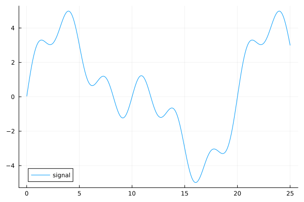
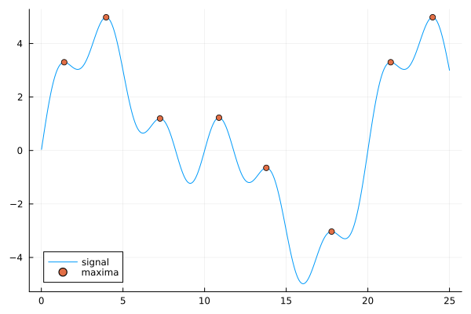
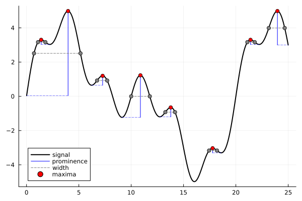

Peaks.jl
Installation
Peaks.jl can be installed from the Julia REPL by running
] add Peaks Activating new project at `/tmp/jl_x6Mof4`
Resolving package versions...
Updating `/tmp/jl_x6Mof4/Project.toml`
[18e31ff7] + Peaks v0.5.2
Updating `/tmp/jl_x6Mof4/Manifest.toml`
[34da2185] + Compat v4.14.0
[18e31ff7] + Peaks v0.5.2
[aea7be01] + PrecompileTools v1.2.1
[21216c6a] + Preferences v1.4.3
[3cdcf5f2] + RecipesBase v1.3.4
[ade2ca70] + Dates
[de0858da] + Printf
[9a3f8284] + Random
[ea8e919c] + SHA v0.7.0
[fa267f1f] + TOML v1.0.3
[cf7118a7] + UUIDs
[4ec0a83e] + UnicodeFinding peaks

To find the peaks in your data you can use the findmaxima function:
julia> indices, heights = findmaxima(x)(indices = [140, 397, 727, 1088, 1378, 1778, 2140, 2397], heights = [3.3001180343485115, 4.982235906888356, 1.19726332809023, 1.2276270625137884, -0.649087702954193, -3.0319632113953285, 3.300118034348509, 4.9822359068883575], data = [0.040839490104164766, 0.08167169433331661, 0.12248932921227289, 0.1632851160646655, 0.20405178341023295, 0.24478206935957528, 0.2854687240055277, 0.32610451181030864, 0.3666822139876027, 0.40719463087873625 … 3.2806714366275522, 3.24976679333019, 3.218775209038968, 3.187703807355776, 3.1565597289197567, 3.125350129026058, 3.094082175239698, 3.062763045005054, 3.031399923252112, 3.0000000000000067])
When the peaks are plotted over the data, we see that all the local maxima have been identified.

Peak characteristics
Two commonly desired peak characteristics can be determined using the peakproms and peakwidths functions:
julia> indices, proms = peakproms(indices, x)([140, 397, 727, 1088, 1378, 1778, 2140, 2397], [0.26815482295318294, 4.941396416784191, 0.5481756251360385, 2.455254125027577, 0.5481756251360379, 0.26815482295318027, 0.2681548229531798, 1.9822359068883508])julia> indices, widths, edges... = peakwidths(indices, x, proms)([140, 397, 727, 1088, 1378, 1778, 2140, 2397], [70.62339375042949, 444.09555744784046, 96.64864118074286, 177.77396024766495, 92.3755778284517, 75.53166482746929, 70.62339375042939, 152.24707139752581], [109.8624844571449, 71.48234345023961, 673.8531613837339, 1000.0, 1326.1468386162662, 1743.9824569649563, 2109.862484457145, 2314.2697842114826], [180.4858782075744, 515.5779008980801, 770.5018025644767, 1177.773960247665, 1418.522416444718, 1819.5141217924256, 2180.4858782075744, 2466.5168556090084])
Plotting
The peaks, prominences, and widths can be visualized all together using plotpeaks:
plotpeaks(t, x; peaks=indices, prominences=true, widths=true)